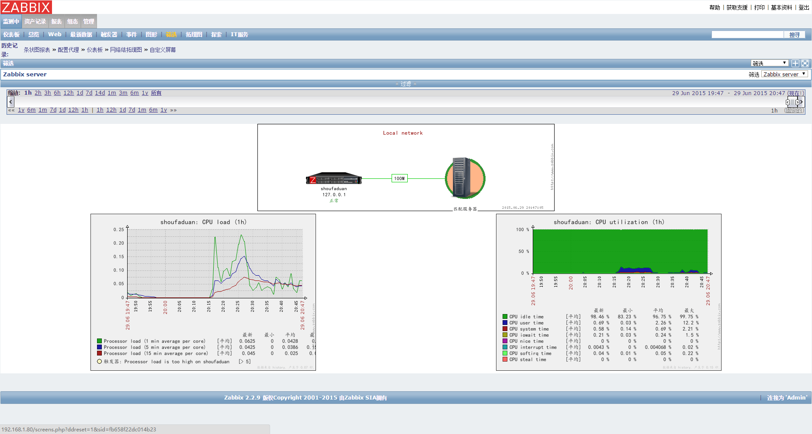
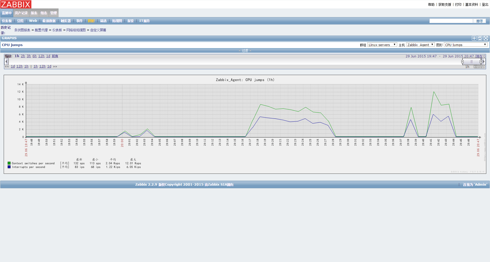
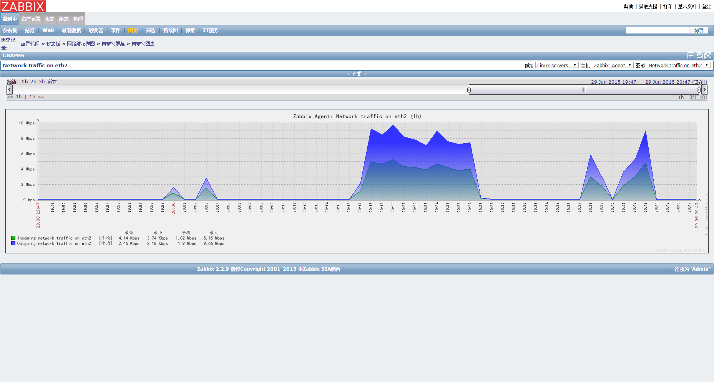

<!DOCTYPE html>
<html>
<head>
  <meta charset="utf-8">
  <meta name="baidu-site-verification" content="1ZsVVOmjoT">
  
  <title>zabbix-server安装脚本 | geosmart</title>
  <meta name="viewport" content="width=device-width,initial-scale=1,maximum-scale=1">
  <meta name="description" content="&amp;#x51C6;&amp;#x5907;&amp;#x5185;&amp;#x5BB9;
zabbix&amp;#x5B89;&amp;#x88C5;&amp;#x5305;&amp;#xFF08;&amp;#x5B98;&amp;#x7F51;&amp;#x7248;&amp;#x672C;&amp;#xFF1A;zabbix-2.2.9.tar.gz&amp;#xFF09;
zabbix&amp;#x5B89;&amp;#x88C5;&amp;#x811A;&amp;#x672C; 
LNMP/LNAP&amp;#x73AF;&amp;#x5">
<meta property="og:type" content="article">
<meta property="og:title" content="zabbix-server安装脚本">
<meta property="og:url" content="http://geosmart.github.io/2015/06/30/zabbix-server安装脚本/index.html">
<meta property="og:site_name" content="geosmart">
<meta property="og:description" content="&amp;#x51C6;&amp;#x5907;&amp;#x5185;&amp;#x5BB9;
zabbix&amp;#x5B89;&amp;#x88C5;&amp;#x5305;&amp;#xFF08;&amp;#x5B98;&amp;#x7F51;&amp;#x7248;&amp;#x672C;&amp;#xFF1A;zabbix-2.2.9.tar.gz&amp;#xFF09;
zabbix&amp;#x5B89;&amp;#x88C5;&amp;#x811A;&amp;#x672C; 
LNMP/LNAP&amp;#x73AF;&amp;#x5">
<meta property="og:image" content="http://geosmart.github.io/zabbix.png">
<meta property="og:image" content="http://geosmart.github.io/filter.png">
<meta property="og:image" content="http://geosmart.github.io/cpu.png">
<meta property="og:image" content="http://geosmart.github.io/network.png">
<meta property="og:updated_time" content="2015-06-30T15:02:45.947Z">
<meta name="twitter:card" content="summary">
<meta name="twitter:title" content="zabbix-server安装脚本">
<meta name="twitter:description" content="&amp;#x51C6;&amp;#x5907;&amp;#x5185;&amp;#x5BB9;
zabbix&amp;#x5B89;&amp;#x88C5;&amp;#x5305;&amp;#xFF08;&amp;#x5B98;&amp;#x7F51;&amp;#x7248;&amp;#x672C;&amp;#xFF1A;zabbix-2.2.9.tar.gz&amp;#xFF09;
zabbix&amp;#x5B89;&amp;#x88C5;&amp;#x811A;&amp;#x672C; 
LNMP/LNAP&amp;#x73AF;&amp;#x5">
  
  
    <link rel="icon" href="/favicon.png">
  

  <link rel="stylesheet" href="/css/style.css" type="text/css">
  
    <link rel="stylesheet" href="/fancybox/jquery.fancybox.css" type="text/css">
  
  
    <link rel="stylesheet" href="/scrollLoading/style.css" type="text/css">
  
   <!-- geosmart -->
  <!-- Baidu Analytics -->
<script type="text/javascript">
    var _hmt = _hmt || [];
    (function () {
        var hm = document.createElement("script");
        hm.src = "//hm.baidu.com/hm.js?221699150bf25edfe6338d0a9f205159";
        var s = document.getElementsByTagName("script")[0];
        s.parentNode.insertBefore(hm, s);
    })();
</script>
<!-- End Baidu Analytics -->
   <!-- geosmart -->

  

  
    <style type="text/css">
      .logo { background-image:url(http://geosmart.github.io/css/images/logo.png); }
    </style>
  

  
    <link href="//fonts.useso.com/css?family=Titillium+Web:300,400,600" rel="stylesheet" type="text/css">
    <link href="//fonts.useso.com/css?family=Source+Code+Pro" rel="stylesheet" type="text/css">
  

</head></html>
<body>
  <div id="wrap">
    <header id="header">
  <div id="header-outer" class="outer">
    <div class="container">
      <div class="container-inner">
        <div id="header-title">
          <h1 class="logo-wrap">
            <a href="/" class="logo"></a>
          </h1>
          
            <h2 class="subtitle-wrap">
              <p class="subtitle">生命不止 奋斗不息</p>
            </h2>
          
        </div>
        <div id="header-inner" class="nav-container">
          <a id="main-nav-toggle" class="nav-icon"></a>
          <div class="nav-container-inner">
            <ul id="main-nav">
              
                <li class="main-nav-list-item"><a class="main-nav-list-link" href="/">Home</a></li>
              
                    <ul class="main-nav-list"><li class="main-nav-list-item"><a class="main-nav-list-link" href="/categories/技术点滴/">技术点滴</a></li></ul>
                  
                <li class="main-nav-list-item"><a class="main-nav-list-link" href="/about/index.html">About</a></li>
              
            </ul>
            <nav id="sub-nav">
              <div id="search-form-wrap">
                <form action="//google.com/search" method="get" accept-charset="UTF-8" class="search-form"><input type="search" name="q" results="0" class="search-form-input" placeholder="搜索"><input type="hidden" name="sitesearch" value="http://geosmart.github.io"></form>
              </div>
            </nav>
          </div>
        </div>
      </div>
    </div>
  </div>
</header>
    <div class="container">
      <div class="main-body container-inner">
        <div class="main-body-inner">
          <section id="main">
            <div class="main-body-header">

              <h1 class="header"><a class="page-title-link" href="/categories/技术点滴/">技术点滴</a></h1>
            </div>
            <div class="main-body-content">
              <article id="post-zabbix-server安装脚本" class="article article-single article-type-post" itemscope itemprop="blogPost">
    <div class="article-inner">
      <!--  -->
      
        <header class="article-header">
          <h1 class="article-title" itemprop="name">
      zabbix-server安装脚本
    </h1>
        </header>
        
      <p class="article-byline">
        <a href="/2015/06/30/zabbix-server安装脚本/" class="article-date">
  <time datetime="2015-06-30T02:47:59.000Z" itemprop="datePublished">30   六月   2015</time>
</a>
      </p> 

      <!--geosmart 待优化toc样式-->
      <article class="article article-summary">
           <ol class="toc"><li class="toc-item toc-level-2"><a class="toc-link" href="#准备内容"><span class="toc-number">1.</span> <span class="toc-text">准备内容</span></a></li><li class="toc-item toc-level-2"><a class="toc-link" href="#安装步骤"><span class="toc-number">2.</span> <span class="toc-text">安装步骤</span></a></li><li class="toc-item toc-level-2"><a class="toc-link" href="#相关操作"><span class="toc-number">3.</span> <span class="toc-text">相关操作</span></a></li></ol> 
      </article>
      <!--geosmart 待优化toc样式-->

      <div class="article-entry" itemprop="articleBody"> 
        <p> </p>
<h2 id="&#x51C6;&#x5907;&#x5185;&#x5BB9;">&#x51C6;&#x5907;&#x5185;&#x5BB9;</h2><ol>
<li><a href="http://sourceforge.net/projects/zabbix/files/ZABBIX%20Latest%20Stable/2.2.9/zabbix-2.2.9.tar.gz/download" target="_blank" rel="external">zabbix&#x5B89;&#x88C5;&#x5305;&#xFF08;&#x5B98;&#x7F51;&#x7248;&#x672C;&#xFF1A;zabbix-2.2.9.tar.gz&#xFF09;</a></li>
<li><a href="install-zabbix_server.sh">zabbix&#x5B89;&#x88C5;&#x811A;&#x672C;</a> </li>
<li>LNMP/LNAP&#x73AF;&#x5883;&#x5B89;&#x88C5;</li>
</ol>
<h2 id="&#x5B89;&#x88C5;&#x6B65;&#x9AA4;">&#x5B89;&#x88C5;&#x6B65;&#x9AA4;</h2><p>1&#x3001;PHP&#x53C2;&#x6570;&#x914D;&#x7F6E;<br>&#x4E3A;&#x5B89;&#x88C5;zabbix&#x76D1;&#x63A7;WebUI&#xFF0C;&#x9700;&#x8981;&#x9884;&#x5148;&#x914D;&#x7F6E;php<br><code>vim /usr/local/php/etc/php.ini</code>&#x67E5;&#x627E;&#x914D;&#x7F6E;&#x4E0B;&#x5217;&#x53C2;&#x6570;&#xFF1A;<br><figure class="highlight bash"><table><tr><td class="gutter"><pre><span class="line">1</span><br><span class="line">2</span><br><span class="line">3</span><br><span class="line">4</span><br><span class="line">5</span><br><span class="line">6</span><br></pre></td><td class="code"><pre><span class="line">memory_<span class="built_in">limit</span> = <span class="number">128</span>M</span><br><span class="line">post_max_size = <span class="number">50</span>M</span><br><span class="line">upload_max_filesize =<span class="number">50</span>M</span><br><span class="line">max_execution_time = <span class="number">600</span></span><br><span class="line">max_input_time = <span class="number">600</span></span><br><span class="line">date.timezone = Asia/Shanghai</span><br></pre></td></tr></table></figure></p>
<ol>
<li>&#x4FEE;&#x6539;zabbix_server&#x7A0B;&#x5E8F;&#x7684;&#x78C1;&#x76D8;&#x8DEF;&#x5F84;<br>&#x6DFB;&#x52A0;&#x4E0B;&#x9762;&#x4E24;&#x53E5;&#x5230;<code>#!/bin/bash</code>&#x4E4B;&#x540E;&#xFF0C;&#x89E3;&#x51B3;<code>service myservicedoes not support chkconfig</code>&#x95EE;&#x9898;<figure class="highlight bash"><table><tr><td class="gutter"><pre><span class="line">1</span><br><span class="line">2</span><br></pre></td><td class="code"><pre><span class="line"><span class="comment"># chkconfig: 2345 10 90 </span></span><br><span class="line"><span class="comment"># description:zabbix....</span></span><br></pre></td></tr></table></figure>
</li>
</ol>
<p>&#x4FEE;&#x6539;zabbix_server&#x4E3B;&#x7A0B;&#x5E8F;&#x8DEF;&#x5F84;<br><figure class="highlight bash"><table><tr><td class="gutter"><pre><span class="line">1</span><br><span class="line">2</span><br></pre></td><td class="code"><pre><span class="line"><span class="comment"># vim /usr/local/zabbix/misc/init.d/tru64/zabbix_server</span></span><br><span class="line">DAEMON=/usr/<span class="built_in">local</span>/zabbix/sbin/zabbix_server</span><br></pre></td></tr></table></figure></p>
<ol>
<li>&#x7F16;&#x8F91;zabbix_server&#x914D;&#x7F6E;&#x6587;&#x4EF6;<br><code>vim /usr/local/zabbix/etc/zabbix_server.conf</code> <pre><code class="bash">DBHost=localhost
DBName = zabbix 
DBPassword =zabbix  
DBUser = zabbix  
LogFile=/tmp/zabbix_server.log
</code></pre>
</li>
</ol>
<p>4.??&#x914D;&#x7F6E;<br>TODO &#x662F;&#x5426;&#x5FC5;&#x987B;&#xFF0C;&#x6682;&#x9700;&#x6D4B;&#x8BD5;</p>
<pre><code class="bash">
mkdir /etc/zabbix
touch /etc/zabbix/zabbix_server.conf
chown -R zabbix:zabbix /etc/zabbix
touch /var/<span class="built_in">log</span>/zabbix.log
chown zabbix:zabbix /var/<span class="built_in">log</span>/zabbix.log

cat &gt;&gt;/etc/zabbix/zabbix_server.conf &lt;&lt;EOF
DBHost=localhost
DBName = zabbix 
DBPassword =zabbix  
DBUser = zabbix  
LogFile=/tmp/zabbix_server.log 
EOF
</code></pre>
<ol>
<li>&#x6267;&#x884C;&#x5B89;&#x88C5;&#x811A;&#x672C;<pre><code class="bash"><span class="built_in">cd</span> usr/<span class="built_in">local</span>/zabbix/sbin/install-zabbix_server.sh
chmod +x install-zabbix_server.sh 
sudo ./install-zabbix_server.sh
</code></pre>
</li>
</ol>
<h2 id="&#x76F8;&#x5173;&#x64CD;&#x4F5C;">&#x76F8;&#x5173;&#x64CD;&#x4F5C;</h2><ol>
<li>zabbix&#x7F51;&#x7AD9;&#x4E2D;&#x7684;&#x542F;&#x7528;&#x4E2D;&#x6587;&#x540E;&#x4E71;&#x7801;&#x95EE;&#x9898;</li>
</ol>
<ul>
<li>&#x5728;zabbix&#x7F51;&#x7AD9;&#x76EE;&#x5F55;&#x4E0B;&#x7684;include/locales.inc.php&#x6587;&#x4EF6;&#x4E2D;&#x542F;&#x7528;&#x4E2D;&#x6587;&#xFF08;&#x2019;display&#x2019;=true&#xFF09;</li>
<li>&#x5728;windows&#x4E0B;&#x63A7;&#x5236;&#x9762;&#x677F;-&gt;&#x5B57;&#x4F53;-&gt;&#x9009;&#x62E9;&#x4E00;&#x79CD;&#x4E2D;&#x6587;&#x5B57;&#x5E93;&#x4F8B;&#x5982;&#x201C;&#x6977;&#x4F53;&#x201D;&#xFF0C;&#x628A;&#x5B83;&#x62F7;&#x8D1D;&#x5230;zabbix&#x7684;web&#x7AEF;&#x7684;fonts&#x76EE;&#x5F55;&#x4E0B;&#x4F8B;&#x5982;&#xFF1A;/var/www/html/zabbix/fonts&#xFF0C;&#x5E76;&#x4E14;&#x628A;TTF&#x540E;&#x7F00;&#x6539;&#x4E3A;ttf</li>
<li>&#x4FEE;&#x6539;zabbix&#x7684;web&#x7AEF;/include/defines.inc.php&#xFF0C;&#x5982;&#x4E0B;<pre><code class="php"><span class="comment">//define(&apos;ZBX_GRAPH_FONT_NAME&apos;, &apos;DejaVuSans&apos;); // origin name</span>
define(<span class="string">&apos;ZBX_GRAPH_FONT_NAME&apos;</span>, <span class="string">&apos;simkai&apos;</span>); <span class="comment">// custom  font name</span>
</code></pre>
</li>
</ul>
<ol>
<li><p>&#x82E5;zabbix&#x7684;host&#x65E0;&#x6CD5;&#x8BBF;&#x95EE;&#xFF0C;&#x8003;&#x8651;&#x9632;&#x706B;&#x5899;&#x662F;&#x5426;&#x9700;&#x8981;&#x5173;&#x95ED;/&#x52A0;&#x5165;&#x4FE1;&#x4EFB;&#x7AEF;&#x53E3;</p>
<pre><code class="bash"><span class="comment">#&#x67E5;&#x770B;&#x9632;&#x706B;&#x5899;&#x72B6;&#x6001;</span>
service iptables status 
<span class="comment">#&#x5173;&#x95ED;&#x9632;&#x706B;&#x5899; </span>
service iptables stop
</code></pre>
</li>
<li><p>&#x67E5;&#x770B;zabbix&#x670D;&#x52A1;&#x662F;&#x5426;&#x5DF2;&#x542F;&#x52A8;</p>
<pre><code class="bash">netstat -utlnp | grep zabbix
</code></pre>
</li>
<li><p>&#x914D;&#x7F6E;&#x6587;&#x4EF6;&#x66F4;&#x65B0;&#x540E;&#xFF0C;&#x9700;&#x91CD;&#x542F;&#x5BA2;&#x6237;&#x7AEF;&#x670D;&#x52A1;</p>
<pre><code class="bash">service zabbix_server restart
</code></pre>
</li>
<li><p>zabbix web&#x914D;&#x7F6E;&#x7B80;&#x7565;&#xFF0C;&#x8D34;&#x51E0;&#x5F20;&#x6548;&#x679C;&#x56FE;<br><br><br></p>
</li>
</ol>
      </div>
      <footer class="article-footer">
        <a data-url="http://geosmart.github.io/2015/06/30/zabbix-server安装脚本/" data-id="cibk2vr7d000g8kpakk80qq2c" class="article-share-link">分享到</a>
        
          <a href="http://geosmart.github.io/2015/06/30/zabbix-server安装脚本/#comments" class="article-comment-link">评论</a>
        
        <ul class="article-tag-list"><li class="article-tag-list-item"><a class="article-tag-list-link" href="/tags/centos/">CentOS</a></li><li class="article-tag-list-item"><a class="article-tag-list-link" href="/tags/监控/">监控</a></li><li class="article-tag-list-item"><a class="article-tag-list-link" href="/tags/运维/">运维</a></li></ul>
      </footer>
    </div>
  </article>


<section id="comments">
    <!-- ¶à˵ÆÀÂÛ¿ò start -->
    <div class="ds-thread" data-thread-key="post-zabbix-server安装脚本" data-title="zabbix-server安装脚本" data-url="http://geosmart.github.io/2015/06/30/zabbix-server安装脚本/"></div>
    <!-- ¶à˵ÆÀÂÛ¿ò end -->
    <!-- ¶à˵¹«¹²JS´úÂë start (Ò»¸öÍøÒ³Ö»Ðè²åÈëÒ»´Î) -->
    <script type="text/javascript">
        var duoshuoQuery = {short_name: 'geosmart'};
        (function () {
            var ds = document.createElement('script');
            ds.type = 'text/javascript';
            ds.async = true;
            ds.src = (document.location.protocol == 'https:' ? 'https:' : 'http:') + '//static.duoshuo.com/embed.js';
            ds.charset = 'UTF-8';
            (document.getElementsByTagName('head')[0]
            || document.getElementsByTagName('body')[0]).appendChild(ds);
        })();
    </script>
    <!-- ¶à˵¹«¹²JS´úÂë end -->
</section>
            </div>
          </section>
          <aside id="sidebar">
  <a class="sidebar-toggle" title="Expand Sidebar"><i class="toggle icon"></i></a>
  <div class="sidebar-top">
    <p>关注我 :</p>
    <ul class="social-links">
      
        <li><a class="social-tooltip" title="github" href="https://github.com/geosmart" target="_blank"><i id="icon-github" class="icon"></i></a></li>
      
        <li><a class="social-tooltip" title="weibo" href="/" target="_blank"><i id="icon-weibo" class="icon"></i></a></li>
      
        <li><a class="social-tooltip" title="google_plus" href="/" target="_blank"><i id="icon-google_plus" class="icon"></i></a></li>
      
        <li><a class="social-tooltip" title="rss" href="/atom.xml" target="_blank"><i id="icon-rss" class="icon"></i></a></li>
      
    </ul>
  </div>
  
    <nav id="article-nav">
  
    <a href="/2015/06/30/中文测试post/" id="article-nav-newer" class="article-nav-link-wrap">
      <strong class="article-nav-caption">下一篇</strong>
      <p class="article-nav-title">
        
          中文测试POST
        
      </p>
      <i class="icon" id="icon-chevron-right"></i>
    </a>
  
  
    <a href="/2015/06/29/zabbix-agent安装脚本/" id="article-nav-older" class="article-nav-link-wrap">
      <strong class="article-nav-caption">上一篇</strong>
      <p class="article-nav-title">zabbix-agent安装脚本</p>
      <i class="icon" id="icon-chevron-left"></i>
    </a>
  
</nav>
  
  <div class="widgets-container">
    
      <div class="widget-wrap">
    <h3 class="widget-title">最新文章</h3>
    <div class="widget">
      <ul id="recent-post" class="no-thumbnail">
        
          <li>
            
            <div class="item-inner">
              <p class="item-category"><a class="article-category-link" href="/categories/技术点滴/">技术点滴</a></p>
              <p class="item-title"><a href="/2015/06/30/日志分析工具/" class="title">日志分析工具</a></p>
              <p class="item-date"><time datetime="2015-06-30T06:47:50.000Z" itemprop="datePublished">30   六月   2015</time></p>
            </div>
          </li>
        
          <li>
            
            <div class="item-inner">
              <p class="item-category"><a class="article-category-link" href="/categories/技术点滴/">技术点滴</a></p>
              <p class="item-title"><a href="/2015/06/30/常用git命令/" class="title">常用git命令</a></p>
              <p class="item-date"><time datetime="2015-06-30T05:18:03.000Z" itemprop="datePublished">30   六月   2015</time></p>
            </div>
          </li>
        
          <li>
            
            <div class="item-inner">
              <p class="item-category"><a class="article-category-link" href="/categories/技术点滴/">技术点滴</a></p>
              <p class="item-title"><a href="/2015/06/30/lnmp安装/" class="title">LNMP安装</a></p>
              <p class="item-date"><time datetime="2015-06-30T05:11:58.000Z" itemprop="datePublished">30   六月   2015</time></p>
            </div>
          </li>
        
          <li>
            
            <div class="item-inner">
              <p class="item-category"><a class="article-category-link" href="/categories/技术点滴/">技术点滴</a></p>
              <p class="item-title"><a href="/2015/06/30/hexo安装/" class="title">Hexo安装</a></p>
              <p class="item-date"><time datetime="2015-06-30T04:58:32.000Z" itemprop="datePublished">30   六月   2015</time></p>
            </div>
          </li>
        
          <li>
            
            <div class="item-inner">
              <p class="item-category"></p>
              <p class="item-title"><a href="/2015/06/30/中文测试post/" class="title">中文测试POST</a></p>
              <p class="item-date"><time datetime="2015-06-30T02:47:59.000Z" itemprop="datePublished">30   六月   2015</time></p>
            </div>
          </li>
        
      </ul>
    </div>
  </div>
    
      <div class="widget-wrap widget-list">
    <h3 class="widget-title">分类</h3>
    <div class="widget">
      <ul class="category-list"><li class="category-list-item"><a class="category-list-link" href="/categories/技术点滴/">技术点滴</a><span class="category-list-count">10</span></li></ul>
    </div>
  </div>
    
      <div class="widget-wrap widget-list">
    <h3 class="widget-title">归档</h3>
    <div class="widget">
      <ul class="archive-list"><li class="archive-list-item"><a class="archive-list-link" href="/archives/2015/06/">六月 2015</a><span class="archive-list-count">12</span></li></ul>
    </div>
  </div>
    
      <div class="widget-wrap widget-float">
    <h3 class="widget-title">标签云</h3>
    <div class="widget tagcloud">
      <a href="/tags/centos/" style="font-size: 20px">CentOS</a> <a href="/tags/test/" style="font-size: 12.5px">TEST</a> <a href="/tags/web服务器/" style="font-size: 15px">Web服务器</a> <a href="/tags/工具/" style="font-size: 15px">工具</a> <a href="/tags/数据库/" style="font-size: 10px">数据库</a> <a href="/tags/监控/" style="font-size: 12.5px">监控</a> <a href="/tags/运维/" style="font-size: 17.5px">运维</a>
    </div>
  </div>
    
      <div class="widget-wrap widget-list">
    <h3 class="widget-title">链接</h3>
    <div class="widget">
      <ul>
        
          <li>
            <a href="http://hexo.io">Hexo</a>
          </li>
        
          <li>
            <a href="http://ltsoft.github.io">ltsoft</a>
          </li>
        
      </ul>
    </div>
  </div>
    
  </div>
</aside>
        </div>
      </div>
    </div>
    <footer id="footer">
  
  <div class="container">
    <div class="container-inner">
      <a id="back-to-top" href="javascript:;"><i class="icon" id="icon-angle-up"></i></a>
      <div class="credit">
        <h1 class="logo-wrap">
          <a href="/" class="logo"></a>
        </h1>
        <p>&copy; 2015 geosmart</p>
        <p>Powered by <a href="//hexo.io/" target="_blank">Hexo</a>. Theme by <a href="//github.com/ppoffice" target="_blank">PPOffice</a></p>
      </div>
    </div>
  </div>
</footer>
    <script src="http://code.jquery.com/jquery-2.1.3.min.js"></script>


  <script src="/fancybox/jquery.fancybox.pack.js" type="text/javascript"></script>


  <script src="/scrollLoading/jquery.scrollLoading.js" type="text/javascript"></script>
  <script src="/scrollLoading/main.js" type="text/javascript"></script>


<script src="/js/html-patch.js" type="text/javascript"></script>
<script src="/js/script.js" type="text/javascript"></script>
  </div>
</body>
